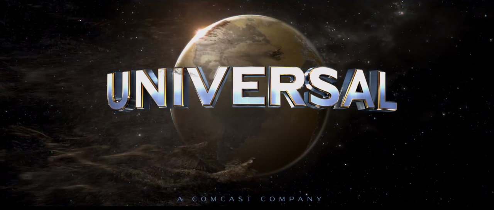
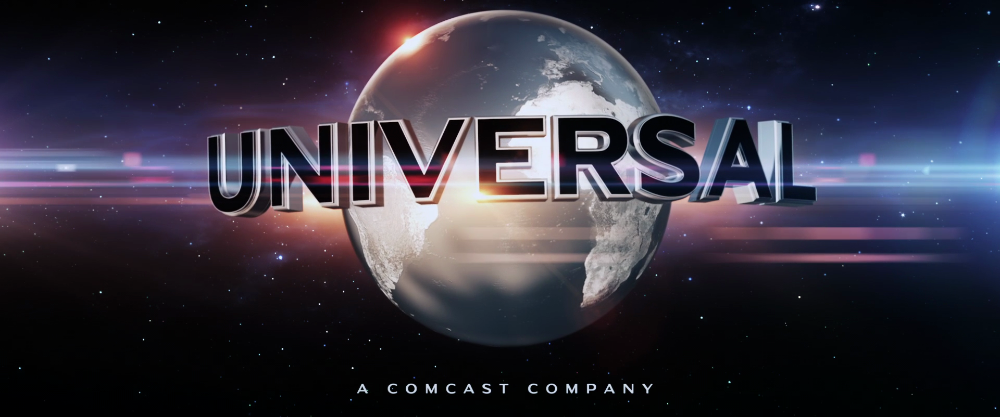

Context & Style: The Heart of Design
So far we have looked at the basic building block of design. The principles and elements all good design share.
But what makes any single design different from any other?
Context and style
You must know your message, your subject, your goal with the design like the back of your hand.
And then you must adapt your design to match that context.
To help show you the power of context, let's consider two movie posters: Barbie and Edge of Tomorrow. Totally different genres and messages - and the designs reflects that.
Notice the different color palettes, the fonts, the textures
What would happen if we tried to switch those around
So far, we've examined several principles and elements of good design. These principles have been objective in nature and I've shared several "rules" for how they should be implemented.
While it's important to understand these objective principles, there is one more important principle. Something that goes deeper.
An abstract, non-objective principle.
A flexible, relative principle.
Context.
Using all of the other principles can get you a workman-like result. Something that checks off all the boxes, but still feels 'sterile' or 'soulless'.
Sure, a well-structured design will get you far. But a unique, well-structured design will get even farther. It's the difference between good and great.
Style is what makes a design unique. And context is the root of style. Context is one of the most critical things to consider when designing.
Now, some may argue style can't be taught. If these people are hoping for a list of style rules that they can check off one by one, then they are right. There is no rulebook when it comes to style because style is contextual.
But that doesn't mean you can't learn style.
I may not be able to teach you the exact style you need to use for your individual projects. But I can show you how to approach style, what to consider, and where to find inspiration.
How Context Affects Design
The best designs are tailored to the target audience and/or project. It should match the content.
I remember working on a student film back in college - to try and help a buddy out. He wanted me to come up with promotional material.
I used an all-caps, expanded-spaced title treatment and tagline. I thought: "It looked great on Inception and Dark Knight trailers. Why wouldn't it here."
But when you consider the film was about a family's personal struggle, the typography didn't fit.
It'd be like trying to mix the typography of a Barbie movie and Edge of Tomorrow. You want to create singular identities for your projects.
Not everything needs to have the same look. Even auteur filmmakers like Chris Nolan or Stephen Spielberg have specific identities for their projects. Jurassic Park doesn't look like Minority Report. The Dark Knight isn't like Interstellar.
The creative aspects of a project matter. Before you even open up PowerPoint, you need to have a firm understanding of what you're trying to accomplish. What are you trying to communicate? What are you choosing to emphasize about that topic? Why?
Your designs should not steal the limelight from the message or content. Instead it should bring focus to the subject - to make it shine. And to do that, you must understand your message.
There is an overall context of each design and you need to choose to match the content. I think Universal Studios is a great example of this. For many of their big films, they have custom versions of the studio logo: the neon lights of the Fate of the Furious, the desolate earth on Oblivion, the Egyptian sands on The Mummy.
 Even Warner Brothers did it with The Matrix and Edge of Tomorrow. They look different – they surprise people and I'd like to think draw people into the movie. Yet there is a high level of consistency with their normal logo. While matching context is important, it is possible to give each project its unique identity.
Sometimes we get caught up in all the technical details that we forget to think about the heart of a project. The message and emotions you are trying to convey. And perhaps artists have this ambition more. Maybe businesses don't care much about giving things meaning or a heart. Maybe most businesses aren't artisanal. And maybe the basics are enough for you.
But at some point, all of the people in a given market - all of your competitors - will reach a good level of baseline design proficiency. And as that market gets saturated, you will need to differentiate in a different way.
Embracing context and style will be the key to that differentiation.
In the beginning it's OK to try to recreate designs — so that you get technique down. But eventually, you will need to go deeper — to try and understand why the designers of the works you are emulating made the choices they did. You will need to determine what your project needs are — based on the content or message you are trying to share.
The Process Of Finding Your Context
The question remains: How exactly do you find out what your project needs?
There are a few core techniques you can use to help you determine the stylistic and contextual choices that will make your design unique.
These include:
- Create a Mood Board
- Look At Your Values
- Find Existing Audience Associations + Expectations
- Subject Matter (either explicit or associated elemens)
A mood board is when you look at other people's designs and capture the aspects you like. You can look at competitors or unrelated designs. You can look at Behance and Dribbl. The mood board allows you to gain inspiration and can reveal ideas you never thought of before. This technique is especially suited for beginners. The one thing I caution against is creating a carbon copy.
Your values can also help you make stylistic decisions. If you are more traditional, you might choose serif fonts and a more subdued color palett. If you're trying to communicate exactness or preciseness, you will put more emphasis on geometric shapes and rigid lines. If you're trying to communicate a more human-friendly tone, you will choose shapes and fonts with more curves. You might also come up with more creative associations for your values. For example, if you're hardworking, you might choose worker bees - and a honeycombed shape.
Finding common elements your audience associates with the subject matter of your design can help you come up with specific elements. For example, when I created the logo for this course, I knew my subject was design. What do people associate with designers? I considered different elements and principles. What if I used a Serifed 'T' for typography? What if I came up with some sort of grid icon to symbolize alignment? In the end, I chose the color swatches, because it's accessible. Most people already associate color with design.
Finally, the subect matter of your design can play a huge role in the colors, fonts, textures, and visual effects you use. The PS I love You movie, focused on the handwritten note aspect. You can choose a very plain and unambigous aspect to focus on, or something more subtle. If you're making a design for a robotics conference, what do you think of? Something futuristic? Something made of smaller parts? Intelligence? Brain? Neurons?
Finding The Context For Your Design
- Find hidden meanings
- Gain inspiration
- Ask People Their Thoughts
- Uncover creative associations. Worker bees. Geometric shapes. Curvy.